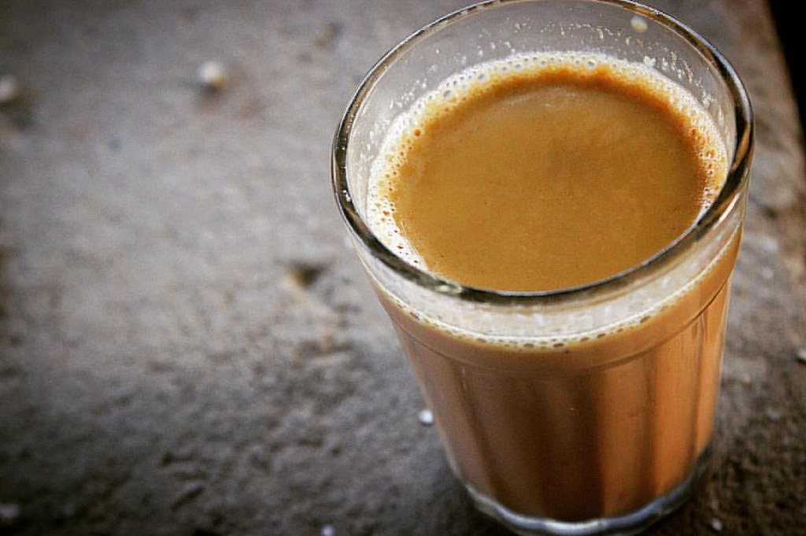

Home
Milk Tea

An intregal part of Nepali's day.
Milk Tea is like fuel to the start of the day and a detoxifier in the evening.
Steps to make Milk Tea.
- Pour 2 cups of milk on a cooking pot.
- Turn the stove on and set it at medium heat.
- Put a tbsp of sugar and 1 tbsp of Nepali tea leaves.
- Let it boil. Once it starts to boil, lower the heat and swirl with strainer, after the mixture settles, turn the heat back to medium.
- Repeat the process for 2 cycles.
- Turn off the stove and use the strainer to strain tea leaves and pour tea into a cup.
- Your tea is made. Enjoy